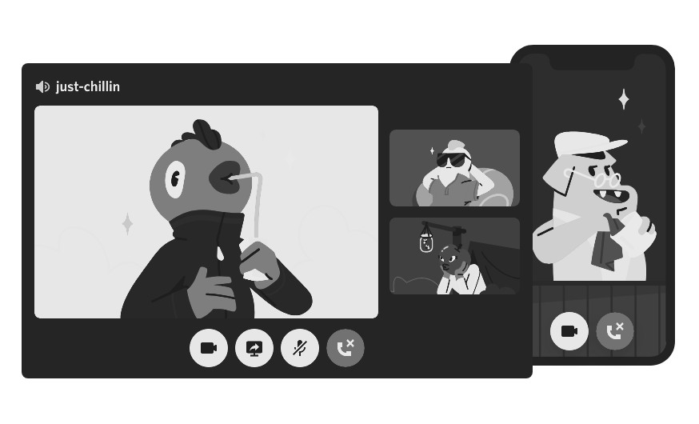

Bienvenidos a nuestra página. Aquí les presentamos Distord, el nuevo y novedoso sistema de mensajería instantánea online.
IMAGINA UN LUGAR... ... en el que puedas formar parte de un club escolar, un grupo de jugadores o una comunidad mundial de arte. En el que puedas pasar tiempo con unos cuantos amigos. Un lugar que haga que hablar a diario y divertirte más a menudo sea fácil.
Crea un lugar solo para miembros en el que encajes. Los servidores de Distord se organizan en canales ordenados por temas donde puedes colaborar, compartir o simplemente hablar de tu día sin monopolizar un chat de grupo.

De unos pocos fans a un montón Establece cualquier comunidad con las herramientas de moderación y el acceso personalizado de miembros. Concédeles poderes especiales, crea canales privados y mucho más.
Básicamente y en pocas palabras, Distord es un servicio de mensajería y llamadas online en el que puedes hablar con tus amigos!
UNA TECNOLOGÍA FIABLE PARA MANTENERSE EN CONTACTO
Gracias a la voz y el vídeo de baja latencia, parece que estáis en la misma habitación. Saluda a la cámara, accede a las transmisiones de los juegos de tus amigos o reuníos y disfrutad de una sesión de dibujo compartiendo la pantalla.
